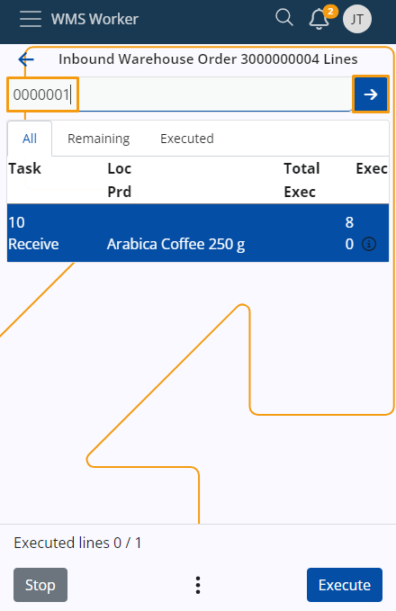

Scanning
Each time you wish to execute lines of an order, you must first scan the corresponding products as many times as necessary.
Single scan
To scan a product once, simply enter its code into the Scan field, then tap the blue arrow button.

Note
You will be taken to the Quantity screen where you need to specify the Location, Lot and Quantity of the product.
Multiple scans
To scan a product multiple times, input the quantity into the Scan field and tap the blue arrow button.
You can optionally include the multiplication operator "*".

The quantity you input will be displayed in a separate field under the main Scan field.
You need to enter the product code into the Scan field to scan it the desired number of times.

Add and see total entered quantity
When scanning a product multiple times, it might sometimes be more convenient to input the quantity several times.
To do that, enter a number in the Scan field and click the blue arrow button. Then, repeat the operation as many times as needed.
The provided numbers will be summed together, and you can see the total quantity for scanning the product.

Note
Example:
Entering "1", "2" and then "3" separately will result in a final quantity of "6" in the quantity box.